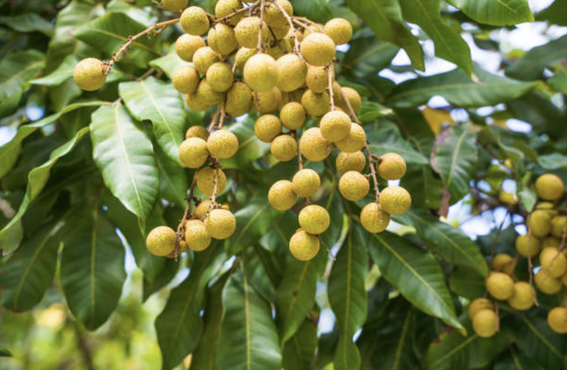

A large fruit with a thick, thorn-covered rind and a strong odor which is often loved or hated. Banned on public transportation in Bangkok.
Great to eat! The flavor of the ripe fruit is a delicious combination of apple, pineapple, mango, and banana flavors. Green (unripe) jackfruit has a mild flavor and meaty texture, and is often cooked.

Related to the lychee and rambutan, and sometimes called "Dragon eye" because the black seed within the shelled fruit resembles an eye. Tastes similar to lychee but milder.
Sweet, tangy, and juicy! Dark purple rind when ripe, with edible white fruit inside.
Covered in flexible spines which makes this fruit look like a small alien creature with bed head! The fruit flesh is called the aril, and is clear, whitish, or very pale pink.The taste is like grapes: sweet, and mildly acidic.
Mild and slightly sweet taste similar to apples, with a crisp watery texture reminiscent of watermelon.
A reddish brown, scaly skin covers the Salak fruit, and earns it the comparison to snakesin. The fruit resembles a ripe fig in size and shape, but consists of pit covered cloves with flavors/textures varying from sweet and dry, to juicy and crunchy depending on the cultivar.
A brown, sweet and tangy pulp surrounds 6 to 12 seeds per pod. Often used as flavoring in sauces (it's one of the ingredients in Worcestershire sauce), chutneys, and curries, and also used to make candy.